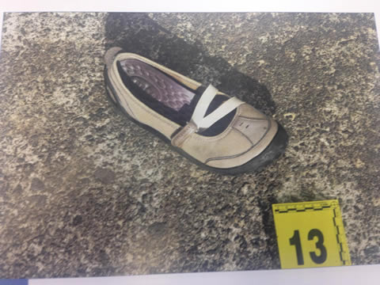
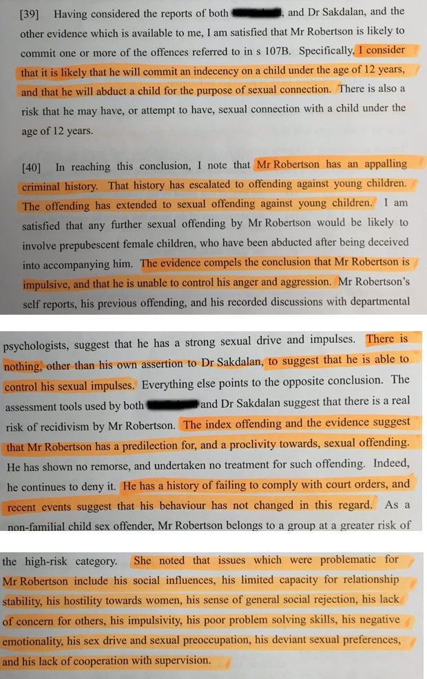

The full story of Blessie Gotingco's killer revealed
Details of the criminal past of the man convicted of killing Blessie Gotingco are revealed in this special feature on Stuff.co.nz
By Sam Boyer
n the 36 hours before he raped and murdered Blessie Gotingco, Tony Robertson visited his dad to say happy birthday, he watched his niece play netball, he mowed his half-sister's lawn.
"He was a good kid, always a good kid," his half-sister Ruth Strickland said.
"He was an awesome uncle and a primo brother".
On Saturday, May 24 last year, before he left Strickland's South Auckland home, he offered her the use of his car for the weekend.
She refused. That night he would use the BMW to run down Gotingco before taking her back to his apartment, assaulting and killing her. He then used the car to take her body away and dump it in a nearby cemetery.
But that afternoon he told his sister she needed the car more than he did.
he "spoilt kid" with the "really good upbringing" was behaving like he had every day since his re-acquaintance with his sister following his release from prison - being generous and "humble".
He insisted she take his newly acquired BMW 540i, even offering his last $40 for petrol money.
Although she would have preferred his "flash" car, she didn't need it, having already borrowed a friend's car for her weekend errands.
So Robertson drove home, late on Saturday afternoon.
At 6pm, he was at the Eskdale Cemetery on Auckland’s North Shore – Robertson's movements were tracked through the GPS anklet he was forced to wear as part of his supervision orders having just been released from jail for attacking a 5-year-old-girl.
Robertson was at the cemetery scoping the area, preparing to attack.
t 7.50pm, after some time driving around the neighbourhood, Robertson was on Salisbury Road. Gotingco - unknown to Robertson - was getting off a bus after working late.

It was cold and she was walking quickly to get to the home she shared with her husband and three children. Just five houses from her front door, Robertson mowed Gotingco down with his car. The impact broke her legs and ribs but could have been survivable, according to pathologist Carl Wigren.
obertson stopped the car, bundled the injured Gotingco into the back seat and drove her to his nearby apartment, arriving by 8pm to comply with his curfew.
There, parked in the garage of his two-bedroom apartment, Robertson raped, strangled, and stabbed Gotingco, before slitting her throat.
he following morning, just after 6am, when his court imposed curfew allowed him to leave the apartment, Robertson was back in the car.
He returned to the cemetery and dumped Gotingco's body.
"I wish I'd taken that car," Strickland said.
"If I could turn back time, I would have taken his car. It could've saved my brother if I did. I'm sorry that things turned out the way they did. I'm just sorry that it happened."
"When he left [on Saturday afternoon] he said, 'Sis, I'll see you tomorrow.' That was the last time we talked."
Strickland, 35, a mother of seven, still fundamentally believes her little brother is good at heart and struggles to reconcile what he did to Gotingco.
orn Tony Douglas George Robertson in Hamilton on February 28, 1987, the future killer was raised by his mother and her family in Mangakino.
His father had left early on and had little to do with him as he grew up.
He took his mother's surname.
His early primary school years were spent in Mangakino, before his mother moved him to Tauranga. Softball was his childhood passion.
Right through his teens he respected his elders and loved children, his mother, Maria McWatters (who has since remarried and changed her last name), said.
"He was very obedient and caring, a funny kid," she said. "He was always respectful."
He finished primary school in Tauranga and attended Otumoetai College. It was at high school where, according to McWatters, he fell in with the wrong crowd.
Between the ages of 16 and 18, Robertson earned himself a rap sheet which included convictions for assault, aggravated robbery, possession of an offensive weapon, wilful damage, threatening to kill, burglary and receiving. He has said he was prospecting for the Mongrel Mob.
Around this time he also became a father, but little is known about the child or his relationship with him.
In December 2005, he was accused of his first serious crime, and, the following year, was found guilty.
He had lured a 5-year-old girl into his car with the promise of Christmas presents. He pretended to speak to the girl's mother on his cell phone to convince the girl he was a family friend and then drove her to an isolated waterfall car park.
A policeman, one of those frantically hunting for the abducted child, turned up at the waterfall – going there on a hunch. He found Robertson leaning over the girl in his car. Her boxer shorts were on the floor.
Robertson was jailed for seven years and six months for abducting and molesting the girl – the term extended by another six months for assaulting a prison guard while in custody.
At the trial Robertson professed his innocence and has continued to claim he was set up – just as he continues to maintain he did not rape or murder Gotingco. He said he killed Gotingco by accident while high on drugs.
His mum has stuck by him, refusing to believe he was capable of such things.
McWatters, 45, moved to Western Australia but stayed in touch with her son.
She was back in Auckland in December 2013 when he was released from jail. She remained in Auckland during his first three months of freedom, setting him up in his upmarket two-bedroom apartment in Birkdale when he was kicked out of a Prisoners Aid and Rehabilitation Society home for breaching their house rules.
Maria McWatters
Family helped tee him up with a Holden, too, before he upgraded that to the BMW - the car in which he raped and ultimately killed Gotingco. The car in which he assaulted the 5-year-old was a Mitsubishi Lancer he had borrowed that day from his mum.
McWatters said her son was starting to open up when she left in early March 2014, though loud noises would startle him and he would still get anxious being in crowds, she said.
"He started coming out of his shell and laughing. It was really good. He was trying to adapt to being back outside."
He was trying to find a job and was considering scaffolding, she said. It wasn't easy for him, though.
She flew back to Australia in early March, leaving him "staring at the four walls" of the apartment. Two months later she learned he was back in custody for the rape and murder of Gotingco.
She heard the allegations, she read what had happened. She heard his version.
Like others of the family, she doesn't believe he committed any crimes in Tauranga in 2005. And she doesn't believe he raped and murdered Gotingco.
"He's not a monster. He's not what they're making him out to be," McWatters said.
"He's told us it's an accident and we believe him … It's just not Tony, it's not what he would do.
"Everyone else seems to believe he's capable of doing that stuff but I just can't believe it. He hates seeing people hurt.
"If you took the time to get to know him, you'd know."
obertson provided his own insight into his life during his trial for Gotingco’s murder.
In the final days of the trial, Robertson took to the stand himself and in a court room hushed to silence as he spoke, he sought to explain away the rape and killing and described a torrid emotional episode in his life which he presumably hoped would persuade jurors to feel sympathy for his plight.
He delivered his testimony in sometimes halting speech, with pauses and a box of tissues proffered to him by the court registrar at one stage. When his voice sank, he bowed his head so low into the witness box that everybody in the courtroom strained their necks to see what he was doing. He was crying softly.
Robertson painted himself as a man hooked on drugs, preoccupied with scoring his next hit of P. In such a confused state, what had been an innocent traffic accident turned somehow into a decision to stab Blessie Gotingco to death.
Robertson said he was driven to drugs because of a series of family tragedies – a beloved aunt died, his mother had a stroke in Australia and he could not visit her, and his partner had miscarried three months into her pregnancy.
Seeking solace, he took a mix of cannabis, synthetic cannabis and methamphetamine, smoking them every day and ensuring he had enough to last throughout the night. "I just smoked drugs and blocked it all out."
Without a job or any friends in the area, he explained his isolation: "I didn't have anyone around that I could turn to."
Which would seem to be at odds with his rekindled associations with his supportive family, his easy going nature with a loose network of friends and family on Facebook. It seemed at odds too with his own testimony of having a partner and numerous female friends.
And none of this explained his Tauranga attack or the years of petty crime that preceded it – all of which was kept from jurors to preserve his right to a fair trial.
is grandfather, however, doesn't buy into the view that Robertson is misunderstood. Douglas Robertson said his grandson was simply a lost cause.
"My opinion is at odds with much of the family … [but] I believe that fulla needs euthanising."
He said he had tried to help Robertson when he was a youngster, before the Tauranga abduction. But the teen took a wayward route.
Now, Douglas Robertson’s only thoughts are for Gotingco's family, violently robbed of a mother and a wife.
"I would just like to express my absolute sincerest, deepest sympathy to the family," he said.
Strickland, the half-sister whose lawn Robertson cut before he committed his crimes, said she couldn't explain the rape and murder of Gotingco. She didn't want to believe it was true.
The crash, she thought, could have been an accident. Maybe her brother then panicked, she wondered.
She just couldn't marry the person she knows with the crimes.
"He's not a bad person. He knows right from wrong. His life was good … I don't know what the hell happened."
She, too, wanted to apologise to the Gotingco family.
"I'm sorry for their loss. I don't know what to say to them, I just feel sorry for them. And it just hurts me that it's my brother. It's a shame things have turned out this way."
After eight years, she had her half-brother back for just a matter of weeks.
"My daughters have been saying, 'Mum, when will we see Uncle Tony again?' And I don't know what to tell them."
he day before Robertson attacked Gotingco, he visited his estranged father in Huntly to wish him happy birthday.
He'd acted "normal", his father Sam Taukinikini said. He ate cold KFC from the fridge and drank a cup of tea.
He'd travelled down with Strickland. They called on other Huntly relatives too, before driving home.
Robertson was careful to be there and back in a day, not wanting to break the curfew imposed by his release conditions.
Taukinikini had very little to do with his son as he was growing up, he said, seeing him only sporadically during his youth.
Mostly it was during school holidays they would spend time together - a week here, a fortnight there.
So it was a surprise when Robertson turned up to his house on Friday, May 23, last year.
"He's basically a stranger to me. I don't have nothing to do with him, really. I didn't even know he was out of jail," Taukinikini said.
"He stopped in before he did that dumb s***. It was the day before he killed that lady."
Though he hadn't raised the boy, knowing now what Robertson had done - first in Tauranga a decade ago, and then raping and killing Gotingco last year - made Taukinikini mad.
"I'm not happy," he said. "I'm not f***ing happy."
ess than a week after he got out of prison, Tony Robertson set up a Facebook page.
It quickly became populated with "friends". It was family - siblings, cousins, aunts, his mum - those who stuck by him, who believed he was innocent or reformed, who wanted to give him another chance.
His social profile, too, suggested a pretty "normal" sort of a life.
The sports teams he followed on the site were the Manly Sea Eagles, the New Zealand Warriors, the Crusaders, the All Blacks and the New Zealand Breakers.
He also followed sites for cars, for reggae music and several for scantily-clad women.
On February 28, his 27th birthday, he received nine happy birthday messages. He replied to each with a thank-you and messages expressing his "luv" for the sender.
He told a half-brother in Australia: "Had a cool day. My girlfriend took me out for dinner."
On March 27, proud of his purchase, he posted a photo of his new silver BMW with the tag, "My new ride. 540 I v8."
He had his freedom, he had a flash car, a nice apartment, contact with his family.
But his family - in real life and on Facebook - didn't know what he was capable of. They hadn't seen the psychologist reports from prison describing him as an ongoing threat to society.

They didn't know he was profiled as an aggressive offender with poor impulse control and "deviant sexual preferences".
He told them he didn't kidnap a 5-year-old girl. He told them he was innocent. He was family.
At the end of his run on Facebook, on May 26 at 7.45pm - almost exactly two days after he ran down Blessie Gotingco, and mere hours before his arrest - he posted his final message.
In response to a girl who wished him goodnight, he replied with a casual kiss.
 orn Tony Douglas George Robertson in Hamilton on February 28, 1987, the future killer was raised by his mother and her family in Mangakino.
orn Tony Douglas George Robertson in Hamilton on February 28, 1987, the future killer was raised by his mother and her family in Mangakino.